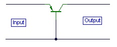
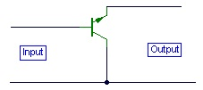
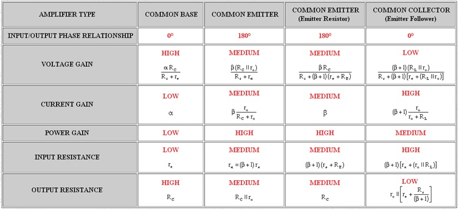
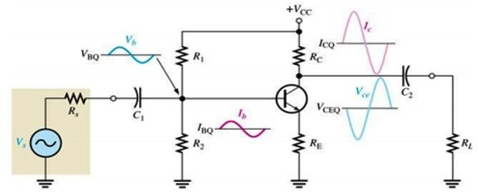

Here the emitter terminal is common to both the input and output signal. The arrangement is the same for a PNP transistor. Used in this way the transistor has the advantages of medium input impedance, medium output impedance, high voltage gain and high current gain.

Fig.2 Common Base Configuration
Here the base is the common terminal. Used frequently for RF applications, this stage has the following properties. Low input impedance, high output impedance, unity (or less) current gain and high voltage gain.

Fig.3 Common Collector Configuration
This last configuration is also more commonly known as the emitter follower. This is because the input signal applied at the base is "followed" quite closely at the emitter with a voltage gain close to unity. The properties are a high input impedance, a very low output impedance, a unity (or less) voltage gain and a high current gain. This circuit is also used extensively as a "buffer" converting impedances or for feeding or driving long cables or low impedance loads.


Fig.4 Circuit diagram of BJT Amplifier
The circuit works in the following manner:
The AC input signal Vs changes the DC base voltage above and below its DC level VBQ.
This voltage change is shown in Figure 4 as Vb.
This changes the DC base current above and below its DC level IBQ.
This current change is shown in Figure 4 as Ib.
This change in IBQ produces a large change in ICQ because of the transistor current gain.
The increase in ICQ decreases the collector voltage VC which in turns decreases the collector emitter voltage VCEQ.
As shown in Figure 4, increase in the base voltage Vb corresponds to decrease in the collector emitter voltage Vce. Therefore the output of this amplifier is 180° out of phase with the input voltage.